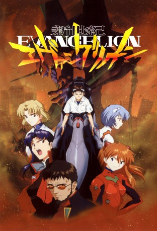

")
 
 IMDB-Wertung: 8.6 / 10
IMDB-Wertung: 8.6 / 10  Metascore:
Metascore: 
Wir schreiben das Jahr 2015. 15 Jahre sind seit dem so genannten "Second Impact" vergangen, der die Auslöschung der Hälfte der Erdbevölkerung zur Folge hatte. Es heißt, dass damals ein gewaltiger Meteorit in die Antarktis einschlug und die Rotationsachse der Erde so verschob, dass Teile der Polkappen abschmolzen. Dies bewirkte eine Steigerung des Meeresspiegels um satte 60 Meter, die dicht besiedelten Küstenregionen der Erde wurden überflutet, Chaos und Bürgerkriege brachen aus. Auch Tokyo wurde vollständig vernichtet. Doch war wirklich ein Meteorit Schuld an dieser Katastrophe? Oder wurde sie etwa absichtlich von außerirdischen Wesen, "Engel" genannt, ausgelöst, deren Ankunft bereits in alten Schriftrollen prophezeit wurde? Was sind die Absichten dieser Wesen, die nun, 15 Jahre nach der Katastrophe, wieder auftauchen und die neu erbaute Stadt Neo Tokyo-3 angreifen? All diese Fragen könnten den jungen Shinji Ikari gar nicht weniger interessieren. Er will einfach nur seine Ruhe haben und sein Leben weiterführen ohne groß über die Welt nachdenken zu müssen. Seit seine Mutter gestorben ist und ihn sein Vater verlassen hat, ist er innerlich abgestumpft und wird von starken Selbstzweifeln geplagt. Als ihn dann eines Tages sein Vater, Gendo Ikari, nach Neo Tokyo-3 beordert, folgt Shinji dem Ruf ohne zu wissen, was ihn erwarten wird. Wie sich schnell herausstellt ist Gendo Ikari nicht an einer freudigen Familienwiedervereinigung interessiert, sondern hat für Shinji eine ganz bestimmte Aufgabe vorgesehen: Er soll Pilot des gewaltigen Kampfroboters EVA-01 werden, den die Geheimorganisation NERV gebaut hat, um den Angriffen der Engel entgegentreten zu können. Diese rätselhaften Kampfroboter namens "Evangelion" können nämlich nur von ganz bestimmten Kindern gesteuert werden, die 9 Monate nach dem "Second Impact" geboren wurden - Kindern wie Shinji. Widerwillig setzt sich Shinji ins Cockpit von EVA-01 und nimmt den Kampf mit den Engeln auf. Doch das ist erst der Anfang einer Geschichte, die immer rätselhafter wird. Denn was bezweckt Gendo Ikari tatsächlich? Was hat es mit dem mysteriösen "Projekt zur Optimierung der Menschheit" auf sich? Und ist "Evangelion" wirklich nichts weiter als eine Maschine?
Jahr: 1995
Dauer: 23 Minuten
FSK: 12
Land: Japan Studio: King RecordsTonspuren: DD5.1 - ,
Untertitel: Deutsch,
Auflösung: 720p (960x720) Größe: 423 MB
Genre: Action, Thriller, Drama, Sci-Fi, Animation/Trick, TV-Serie
Regisseur: Hideaki Anno, Kazuya Tsurumaki, Hiroyuki Ishidô, Tsuyoshi Kaga, Keiichi Sugiyama, Masayuki, Seiji Mizushima, Tetsuya Watanabe, Ken Andô, Naoyasu Habu, Shôichi Masuo, Akira Takamura, Minoru Ôhara, Tensai Okamura, Masahiko Ôtsuka
Drehbuch: Hideaki Anno
Soundtrack:
Darsteller:
 Spike Spencer als Shinji Ikari
Spike Spencer als Shinji Ikari Tiffany Grant als Asuka Langly Soryu
Tiffany Grant als Asuka Langly Soryu Megumi Hayashibara als Rei Ayanami
Megumi Hayashibara als Rei Ayanami Monica Rial als Maya Ibuki
Monica Rial als Maya Ibuki Kôichi Yamadera als Ryôji Kaji
Kôichi Yamadera als Ryôji Kaji Vic Mignogna als Shigeru Aoba
Vic Mignogna als Shigeru Aoba Junko Iwao als Hikari Horaki
Junko Iwao als Hikari Horaki Charles Campbell als Commitee Member
Charles Campbell als Commitee Member Christine M. Auten als Female Doctor, Asuka's Stepmother
Christine M. Auten als Female Doctor, Asuka's Stepmother Shelley Calene-Black als Additional Voices
Shelley Calene-Black als Additional Voices Jason Douglas als Additional Voices
Jason Douglas als Additional Voices John Gremillion als Seele, Additional Voices
John Gremillion als Seele, Additional Voices Fumihiko Tachiki als Gendô Ikari
Fumihiko Tachiki als Gendô Ikari Takehito Koyasu als Shigeru Aoba
Takehito Koyasu als Shigeru Aoba Tomokazu Seki als Tôji Suzuhara
Tomokazu Seki als Tôji Suzuhara Toshihiko Seki als Assistant C
Toshihiko Seki als Assistant CDatei: X:\HD-Anime-Serien\Neon Genesis Evangelion\Neon Genesis Evangelion E01 Angriff der Engel.mkv seit 18.07.2017
Festplatte: Gemischt-01+Anime
 Es gibt insgesamt 67 Filme in der Gruppe 'HD-Anime-Serien'
Es gibt insgesamt 67 Filme in der Gruppe 'HD-Anime-Serien'